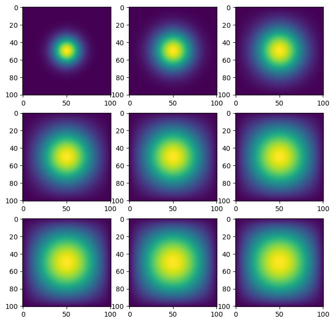

import jax
import numpy as np
import time
from matplotlib import pyplot as plt
from jax.experimental import sparse
from jax import jit
import jax.numpy as jnp
#importing the equations from our heat_equations file
%run heat_equations.ipynb
#setting our values to be used in this example
N = 101
epsilon = 0.2Introduction
Today we will be simulating two dimensional heat diffusion using tools such as numpy and jax. The goal of this project is to get us familiar with some jax functions, as well as the benefits and drawbacks of using jax. Let us begin!
Imports
This block contains the necessary imports needed to run our project. Additionally, you can see we are calling for heat_equations.ipynb to run. This will allow us to access the functions we define within that file so that we can test their functionality within this notebook. Note that in this blog post, all functions have been placed within the same notebook to make the post easier to understand. Finally, we define both N and epsilon to values that we will be using throughout this example. Note that epsilon is used in updating our timestep and N will represent the dimensions of our grid state.
Getting the Matrix A
def get_A(N):
'''Defines our transition operator A given value N
Args:
N: Size of our vector u0 to be used.
Returns:
A: The NxN transition matrix that would be used for
a vector of size N
'''
#define n to be N*N to be used as length of A
n = N * N
#Setting the diagonals to be -4 and 1 where necessary
diagonals = [-4 * np.ones(n), np.ones(n-1), np.ones(n-1), np.ones(n-N), np.ones(n-N)]
#setting all other values to zero
diagonals[1][(N-1)::N] = 0
diagonals[2][(N-1)::N] = 0
#combining diagonals to create matrix A
A = np.diag(diagonals[0]) + np.diag(diagonals[1], 1) + np.diag(diagonals[2], -1) + np.diag(diagonals[3], N) + np.diag(diagonals[4], -N)
return AThe purpose of this function is to create our transition operator A, given the desired size, passed in as N. We know that our matrix A is going to be of size (N2, N2), so in order to make our syntax clearer, we define n = N * N. The transition matrix follows a very distinct format for our model, which makes it easier to define for various sizes. It is made up of a diagonal full of -4, along with four other diagonals filled with ones. In order to implement this into our matrix, we are going to set our diagonals to be numpy arrays filled with our desired values, as seen in the diagonals list above. As we know that all other values are going to be equal to zero, we can use these diagonal arrays, and call np.diag to input these arrays as a diagonal portion of our matrix A. After that, our matrix A is completed and ready to be returned by this function.
Advance Time Using Matrix Multiplication
def advance_time_matvecmul(A, u, epsilon):
"""Advances the simulation by one timestep, via matrix-vector multiplication
Args:
A: The 2d finite difference matrix
u: N x N grid state at timestep k
epsilon: stability constant
Returns:
N x N Grid state at timestep k+1
"""
#update our u to the next time step using matrix multiplication
u = u + epsilon * (A @ u.flatten()).reshape((u.shape[0], u.shape[0]))
return uThis function utilizes matrix multiplication to advance our gridstate one timestep. As we can see, it is passed in three parameters, those being, A, u, and epsilon. A refers to the transition matrix used to change the current gridstate, represented by u, when moving to the next timestep. The scalar value epsilon plays a role in dictating the size of the change between timesteps. We can see that A is multiplied with u within our redefinition of u, however notice that u must be flattened before the multiplication takes place. We want our returned u vector to be the same shape as the inputted one, so after we multiply those two together, we will use the dimensions of the u that was passed in to reshape u back to its original dimensions. We then multiply by the scalar epsilon to determine the size of the change to be used, before adding the whole term to our initial u. As we are adding our initial u, it is intuitive that epsilon(Au) represents the change between timesteps in the diffusion model. Now that we have defined our u for the next timestep, we can return this value, concluding the functionality of this function.
Testing our first function
#defining our matrix A and creating a list to append our results to
A = get_A(N)
listShow = []Here we are calling the function we defined get_A() in order to set our variable A to an A matrix of size (N,N). We also initialize an empty list in which we can store the progression of our heat map. This will allow us to visualize the progression of our heat diffusion later.
%%timeit -r 1 -n 1
#setting u0 to initial condition
u0 = np.zeros((N,N))
u0[int(N/2), int(N/2)] = 1.0
#using for loop to update our timestep 2700 times
for i in range(1, 2701):
#calling function to advance forward one timestep
u0 = advance_time_matvecmul(A, u0, epsilon)
if i%300 == 0:
#appending state every 300 steps and printing timestep for debugging
listShow.append([u0,i])
print(i)300
600
900
1200
1500
1800
2100
2400
2700
1min 39s ± 0 ns per loop (mean ± std. dev. of 1 run, 1 loop each)Lots of things are happening here. First off, you can see that we are timing this block of code using the timeit function. We set both r and n to 1 as we only want to run and time the block of code once. Next we will initialize our u0 vector to be used within this example. As we have seen before, our initial condition is composed of a singular point of heat in the middle of our grid state. Therefore, our initial condition vector u0 will be entirely zeros with the exception of a 1 in the very middle. This is accomplished by creating an (N,N) numpy array filled with zeros, before setting the middle index of each dimension, found at N/2, and setting it to 1. Now we are ready to run our model. We chose to run it for 2700 timesteps, therefore we will make a loop that runs 2700 times, accomplished above via the for loop running i from 1 to 2700. Within each loop, we will update the timestep by setting our u0 equal to the advance_time_matvemul function that we pass in our matrix A, our current u0, and our epsilon. While this updates our timestep, every 300 steps we will append our u0 and the i value, which represents the timestep, to the list we initialized in the previous block. This will allow us to visualize the diffusion in the next step. Additionally, every 300 steps I also chose to print out i in order to be able to see the progression of the loop as this loop ends up taking a long time, 1 min and 39 secs in this case.
#setting dimensions of image display
rows=3
cols = 3
#defining variable to be used in display loop
img_count = 0
#defining our display figure
fig, axes = plt.subplots(nrows=rows, ncols=cols, figsize=(8,8))
#looping through each element in our figure, setting each to a different timestep of our model saved in list listShow
for i in range(rows):
for j in range(cols):
if img_count < len(listShow):
#setting each box in display equal to unique image from list
axes[i, j].imshow(listShow[img_count][0])
#incrementing img_count to let us traverse along the list
img_count+=1Here we can use the listShow list we appended our vectors to in order to visualize our data. We will start by determining the layout of our model. As we appended information every 300 steps out of 2700 total steps, we can calculate that we have a total of 9 pieces of information, making a (3,3) grid a very reasonable option. Hence, we define our rows and columns to be equal to 3. We will also define a img_count variable to be equal to zero. This variable will be used to keep track of how many images we have already plotted. Now we define our figure itself, creating a plot with three rows and three columns, defined using the row and columns variables we just defined. Now we are ready to fill the plot with our images. In order to traverse through our (3,3) grid, we will create a nested for loop, with the outer loop running along the rows and the inner loop running through each column. Now as long as our variable img_count is less than the length of listShow, we will place the image from the list into the plot at location (i,j), given by the two loops. Note that the index of the element of the list we wish to be accessing is given by img_show, making it critical that we increment it within the inner for loop. As you can see, the resulting figures show an expanding heat map, as the heat is diffused from the singular initial point outwards, expanding further as we traverse through more timesteps.
Getting Sparse Matrix
def get_sparse_A(N):
'''Returns a sparse form of our transition matrix A
Args:
N: Size of our vector u0 to be used
Returns:
A_sp_matrix: The sparse form of the NxN transition matrix
that would be used for a vector of size N
'''
#get the matrix A corressponding to the passed value N
A = get_A(N)
#find sparse version of matrix A and set it to our return value
A_sp_matrix = sparse.BCOO.fromdense(A)
return A_sp_matrixThis function is relatively simple, as we have done most of the heavy lifting in our previous function get_A(). Our goal is to receive a size N, and using that create the sparse version of the transition matrix corresponding to that size. A good place to start is by creating the actual transition matrix itself, which we can now easily do by calling our get_A() function, passing in our size N. Now we have to convert this matrix to a sparse matrix. Luckily, the jax.expiremental library has a way to do this using the sparse library. To save our A sparse matrix into A_sp_matrix, we call sparse.BCOO.fromdense() and pass in our matrix A. This method will convert whatever matrix it receives into its sparse form, meaning only containing information on nonzero elements. Now that we have created our desired sparse matrix, we can return this value and conclude our function.
Testing Sparse Matrix
#creating a list in which to append our new results and getting the sparse version of matrix A
listShow1=[]
sp_A = get_sparse_A(N)Here we are defining another list we will append data to. Additionally, we call the get_sparse_A() in order to get a sparse version of our matrix A that will be passed to our advance_time_matvecmul function.
%%timeit -r 1 -n 1
#resetting u0 to initial condition
u0 = np.zeros((N,N))
u0[int(N/2), int(N/2)] = 1.0
#looping to increase timestep a total of 2700 times
for t in range(1, 2701):
#calling jitted version of function to advance timestep
#note that the matrix passed in is a sparse matrix
u0 = jit(advance_time_matvecmul)(sp_A, u0, epsilon)
if t%300 == 0:
#appending timestep information once every 300 steps, printing for debugging purposes
print(t)
listShow1.append([u0,t])300
600
900
1200
1500
1800
2100
2400
2700
1.7 s ± 0 ns per loop (mean ± std. dev. of 1 run, 1 loop each)This block of code is nearly identical to the one we used to test our previous function. We are again timing the code block using timeit, again are creating our initial condition within u0. However the loop is slightly different. We are still running for 2700 timesteps, appending data every 300 steps, but we can see that the function we call is slightly different. We have placed the command jit before the function. This creates a jitted version of our advance_time_matvecmul() function, which should in theory make this function run faster. This is accomplished by using just-in-time compilation, meaning it is compiled during runtime as opposed to before execution. Additionally, we can see that instead of passing the A matrix, we are passing the sparse verision of matrix A, denoted sp_A. This should in theory speed up the process as A was predominantly filled with zeros. Now that it is a sparse matrix, it can ignore multiplication with the zeros, drastically decreasing the time required to run the matrix multiplication within the advance_time_matvecmul() function. As we can see, these changes resulted in a drastic increase in speed, as we are now at 1.7 secs, drastically faster than the previous example.
#defining dimensions of our display figure
rows=3
cols = 3
#resetting variable to be used in display loop
img_count = 0
#defining our display figure
fig, axes = plt.subplots(nrows=rows, ncols=cols, figsize=(8,8))
#looping through each element in our figure, setting each to a different timestep of our model, saved in list listShow1
for i in range(rows):
for j in range(cols):
if img_count < len(listShow1):
#sets each box in display to different image in listShow1
axes[i, j].imshow(listShow1[img_count][0])
#increment img_count to traverse along the list
img_count+=1
This visualization process is the same as our previous one, except that we are pulling from listShow1 instead of listShow. However it is important that our visualizations resemble one another, as otherwise it would mean one of the two methods had some mistake. Yet upon inspection, we can see that these images appear very similar, if not identical, to our previous visualizations.
Advancing Time Using Numpy
def advance_time_numpy(u, epsilon):
"""Advances simulation by one timestep using functions from numpy
Args:
u: NxN grid state at timestep k
epsilon: stability constant
Returns: N x N Grid state at timestep k+1
"""
#get N so we know the size of matrix we are working with
m,N = u.shape
#create new matrix of size with two extra rows and columns
newU = np.zeros((N+2,N+2,),dtype='float64')
#set the center of new matrix equal to u, meaning ring of zeros around passed matrix u
newU[1:-1,1:-1] = u
#implement changes in x direction
u_xx = np.roll(newU, shift=1, axis=0) - 2 * newU + np.roll(newU, shift=-1, axis=0)
#implement changes in y direction
u_yy = np.roll(newU, shift=1, axis=1) - 2 * newU + np.roll(newU, shift=-1, axis=1)
#apply changes and set it equal to a new matrix
finU = newU + epsilon * (u_xx + u_yy)
#eliminate outer ring of values, allowing the heat to escape, setting equal to return value
u_new = finU[1:-1,1:-1]
return u_newThis method will give us a way to advance a timestep without the use of matrix multiplication. As matrix multiplication is expensive from a time standpoint, the hope is that by eliminating the need for it, w e will end up speeding up our advancement process. The first thing to note about this function is that we are only passed in two parameters, those being u and epsilon. Unlike our previous functions, we no longer have the variable N representing the size of our dimensions. Fortunately, we know that our gridstate u is of size (N,N), so our first step is to extract size N from the shape of u, shown in the first line of code. We will now create an empty matrix that will be used to adjust our current u, titled newU. You may notice that the new matrix is of different dimensions than our current u, two greater in each dimension in fact. This allows us to have some padding that later in the function we will take advantage of by using it to let head escape from our model. Therefore, to use this extra space as padding, we need to place our current u into the middle of our new matrix, which can be done by setting the indexed area in the middle of our new matrix equal to our current matrix u. Now is when the math comes in. Using the update equation in discrete time, we can see that for each point, the change is defined by adding heat from the points both to the left and right, as well as the points above and below, followed by a loss of four times the heat from the point itself. In order to implement this change, we are going to do it in two parts, one parat along the x-axis and another along the y-axis. While we could try and shift the matrix and then add it back to the original, the numpy roll() function will work well here, as it shifts all the elements along a given axis. It is important to note that the numpy roll function will send the last elements back to the beginning of the array, which could cause issues, however we have accounted for this possible issue via the padding we introduced earlier. Now, to define the change on the x-axis, we add a roll left and a roll right, along with a subtraction of two of the original matrix itself. Note that we define the roll along the x-axis by setting axis=0 and the shift left or right by defining shift=1 for right shift and shift=-1 for left shift. We now do the exact same thing for the y-axis, the only difference being that we set our axis=1. We can now implement our changes into a new matrix by adding the matrix newU to an espilon scaled factor of the changes, and assigning it to the matrix finU. We now have an updated version of our matrix set for the next timestep, however as a final step we need to remove the padding layer to simultaneously change our matrix back to the same size and to allow heat to escape. This is accomplished by simply indexing the middle of our finU matrix and setting it equal to our return value, u_new. Now, we have created our new u matrix to be used in the next timestep, allowing us to return u_new, concluding this function.
Testing Numpy Function
#creating new list in which we will append our results
newList = []Again creating a list that we will append our data to. This time we will call it newList.
%%timeit -r 1 -n 1
#resetting u0 to initial conditions
u0 = np.zeros((N,N))
u0[int(N/2), int(N/2)] = 1.0
#looping to increase timestep a total of 2700 times
for t in range(1, 2701):
#calling numpy function to advance timestep
u0 = advance_time_numpy(u0, epsilon)
if t%300==0:
#appending timestate information once every 300 steps, printing for debugging purposes
newList.append([u0,t])
print(t)300
600
900
1200
1500
1800
2100
2400
2700
520 ms ± 0 ns per loop (mean ± std. dev. of 1 run, 1 loop each)This testing block of code is a gain very similar to the previous ones, with one main exception. In this block we are no longer calling advance_time_matvecmul(), but are calling advance_time_numpy() instead. Note that in this new function, we no longer need to pass an instance of A, as we are no longer utilizing matrix multiplication to advance our timestep. Apart from that, everything else remains identical to the previous tests, and we can see the improvement our new function yields as the loop only took 520 ms, less than a third of the time of our previous attempt.
#setting the dimensions for our display figure
rows=3
cols = 3
#resetting variable used in display loop
img_count = 0
#defining our display figure
fig, axes = plt.subplots(nrows=rows, ncols=cols, figsize=(8,8))
#looping to fill our display figure
for i in range(rows):
for j in range(cols):
if img_count < len(newList):
#setting each box in display equal to unique image from list newList
axes[i, j].imshow(newList[img_count][0])
#incrementing img_count to traverse to next list element
img_count+=1We run through our visualization process, and can see that the heat plots yielded by the advance_time_numpy() function are the same as our previous visualizations, confirming it to be accurate.
Advancing Time Using Jax
def advance_time_jax(u, epsilon):
"""Advances simulation by one timestep using jax without using
matrix multiplication routines.
Args:
u: N x N grid state at timestep k
epsilon: stability constant
Returns: N x N Grid state at timestep k+1
"""
#get N so that we know what size of matrix we are working with
m,N = u.shape
#create new matrix with two extra rows and columns
newU = jnp.zeros((N+2,N+2))
#set the center of the new matrix equal to the passed matrix u
newU = newU.at[1:-1,1:-1].add(u)
#define the changes to be implemented in the x direction
u_xx = jnp.roll(newU, shift=1, axis=0) - 2 * newU + jnp.roll(newU, shift=-1, axis=0)
#define the changes to be implemented in the y direction
u_yy = jnp.roll(newU, shift=1, axis=1) - 2 * newU + jnp.roll(newU, shift=-1, axis=1)
#implement the changes into a new matrix
finU = newU + epsilon * (u_xx + u_yy)
#setting the return value to the matrix with only desired values
u_new = finU[1:-1,1:-1]
return u_newThis method is very similar to our numpy function, with a couple key differences. Similar to the numpy function above, we want this function to advance our grid state through one timestep without using matrix multiplication. However, we plan on jitting this function, meaning that we will not be able to simply use indexing. Luckily, the jax numpy library has an add() method that will be useful in implementing similar strategies as we did in the previous function. We will again retrieve the dimension N from the size of u, and then create a new matrix with padding, titled newU. However we cannot directly access and change the indices of newU to place our current u in the center, so we add .add(u) to the indices to add it to the middle, creating our padded u that we can now work with. The changes we define in both the x and y directions are identical to the numpy function above, as well as the assignment of the new matrix finU, defined as the sum of newU and an epsilon scaled change. Now, to return, we create a new matrix, u_new, that is defined as the center of our finU matrix, again both resizing back to the same size as our original u and allowing heat to escape. Now, we can return u_new to conclude our function.
Testing Jax Numpy Function
#creating new list to be appended to
newList1 = []Initializing our final output list that we will append to in the following block of code.
%%timeit -r 1 -n 1
#resetting u0 to initial conditions
u0 = np.zeros((N,N))
u0[int(N/2), int(N/2)] = 1.0
#looping to increase timestep a total of 2700 times
for t in range(1, 2701):
#using jax function to advance timestep by one
u0 = jit(advance_time_jax)(u0, epsilon)
if t%300 == 0:
#once every 300 steps append timestep information to list, printing step for debugging purposes
newList1.append([u0,t])
print(t)300
600
900
1200
1500
1800
2100
2400
2700
291 ms ± 0 ns per loop (mean ± std. dev. of 1 run, 1 loop each)This block is only slightly altered from our previous loop, as in this case we are both calling a different function, advance_time_jax() and jitting it. You may be wondering why we did not jit our advance_time_numpy() function. This is because after jitting a function, there are certain rules that must be followed, for example you cannot change specific indices in an array. This rule was not followed by advance_time_numpy(), however we created advance_time_jax() with the idea of jitting it in mind, meaning it satisfies all the rules. We observe another significant improvement as this loop only took 291 ms to run, just over half the time of the previous iteration.
#defining dimensions of display
rows=3
cols = 3
#resetting variable used in display loop
img_count = 0
#defining our figure
fig, axes = plt.subplots(nrows=rows, ncols=cols, figsize=(8,8))
for i in range(rows):
for j in range(cols):
if img_count < len(newList1):
#filling each box with image from information in newList1
axes[i, j].imshow(newList1[img_count][0])
#incrementing to allow for traversal along list
img_count+=1As our visualizations yielded by jax_advance_time() match up with the other three sets, we are confident that all functions are running as designed.
Comparison:
When looking at the four methods that we have implemented, it is clear that the advance_time_matvecmul() method is by far the slowest at 1 minute and 39 seconds per loop while our final method, advance_time_jax() is the fastest at a mere 291 ms per loop. The method advance_time_numpy() and advance_time_jax() may seem relatively similar in speeds as there is less than a second separating their time to progress 2700 time steps, however in reality the jax method is a little less than twice as fast as the numpy method, at times of 291 ms and 520 ms respectively. That being said, they are both significantly faster than the sparse_advance_time_matvecmul() method at 1.7 seconds per loop , which itself is still much faster than the advance_time_matvecmul() which, as stated before, took approximately 1 minute and 39 seconds to advance our model through 2700 timesteps.
When it comes to writing the functions, taking into account that I did not write the first method, I found the get_sparse_A() method the easiest to write, as I was simply building on the get_A() method I had previously written, and then writing one line to set my return value to a sparse matrix corresponding to the matrix returned by the get_A() function. Similarly, the get_A() function was relatively straightforward to write as I simply had to create a matrix and then edit three of the diagonals. I initially had some trouble when writing the advance_time_numpy() function as I was unsure of how to implement the boundary conditions that were to allow heat to escape from the model. Before successfuly completing the boundary condition, my results yielded in a heat map that began to take on an almost plus like shape as the heat began to reach the edges and simply wrap around to the other side. I solved this probliem by creating a matrix of dimensions (N+2)x(N+2), which allowed the heat to go to an outer ring, that was effectively deleted before returning the function, simulating the idea that the heat escaped outside of our model. Similar to the get_A_sparse() function, after writing the advance_time_numpy() function the advance_time_jax() function was relatively easy to implement. Conceptually it follows the same pattern as the numpy function, with the only catches being that jax does not allow for index assingment. To get around this, I found a function .at(), helping me to navigate around the matrices, and more importantly, I created new matrices at each step, meaning I was not altering any pre-existing matrices, but rather creating new ones which is allowed by jax.